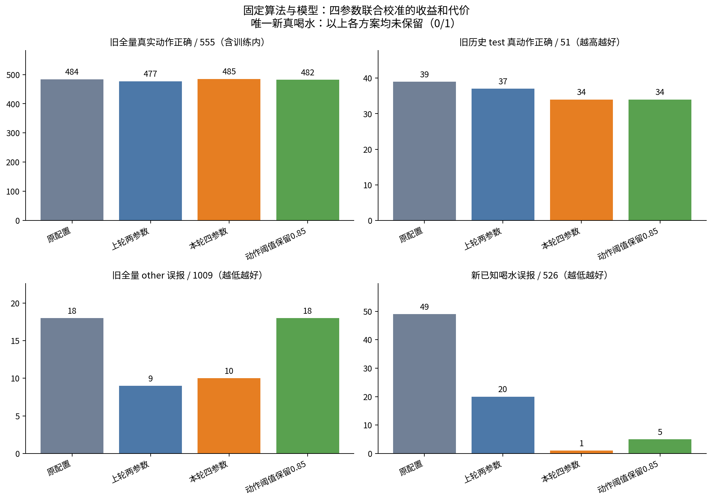
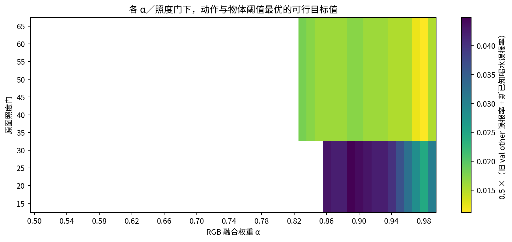
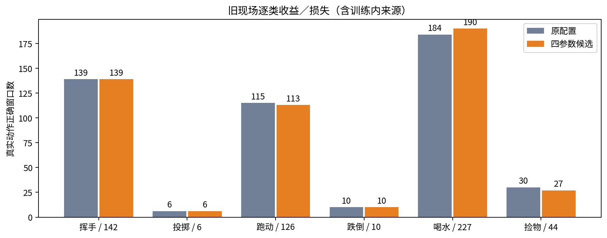

固定算法与模型；旧现场＋新多人用户反馈校准。候选未上线。
| 方案 | α/门/动作/物体 | 旧真动作 | 旧other误报 | 新喝水误报 | 新真喝水 |
|---|---|---|---|---|---|
| 原配置 | 0.95/30/0.85/0.35 | 484/555 | 18/1009 | 49/526 | 0/1 |
| 上轮两参数 | 0.95/30/0.905/0.358 | 477/555 | 9/1009 | 20/526 | 0/1 |
| 本轮四参数 | 0.972/35/0.925/0.581 | 485/555 | 10/1009 | 1/526 | 0/1 |
| 动作阈值保留0.85 | 0.9/35/0.85/0.59 | 482/555 | 18/1009 | 5/526 | 0/1 |
同时比较误报收益和真实动作损失；新捡物、跑动、挥手没有逐窗真值。全量包含旧训练数据，不是独立泛化成绩。
完整报告 · 参数 · 逐窗CSV · 已知得失 · 统计附录


